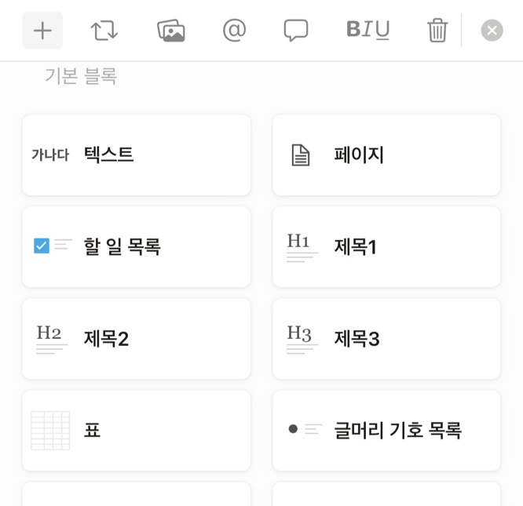

Notion
기능
Download
기능

기본 블록
이라 불리는 이미지 속 기능이 앱을 사용하는 데에 가장 기본이 되며 많이 쓰인다.
데이터베이스 템플릿
을 통해 페이지에 작성한 내용을 표, 타임라인, 캘린더, 갤러리 등의
레이아웃
으로 정리하여 볼 수 있으며, 동시에
태그와 필터
기능을 이용하여 원하는 정보만을 선택해서 나타나게 할 수도 있다.
- 팀 프로젝트
페이지 공유
를 통해 다른 사람과 작성 내용을 공유할 수 있으며 텍스트를 수정하면 실시간으로 동기화된다.